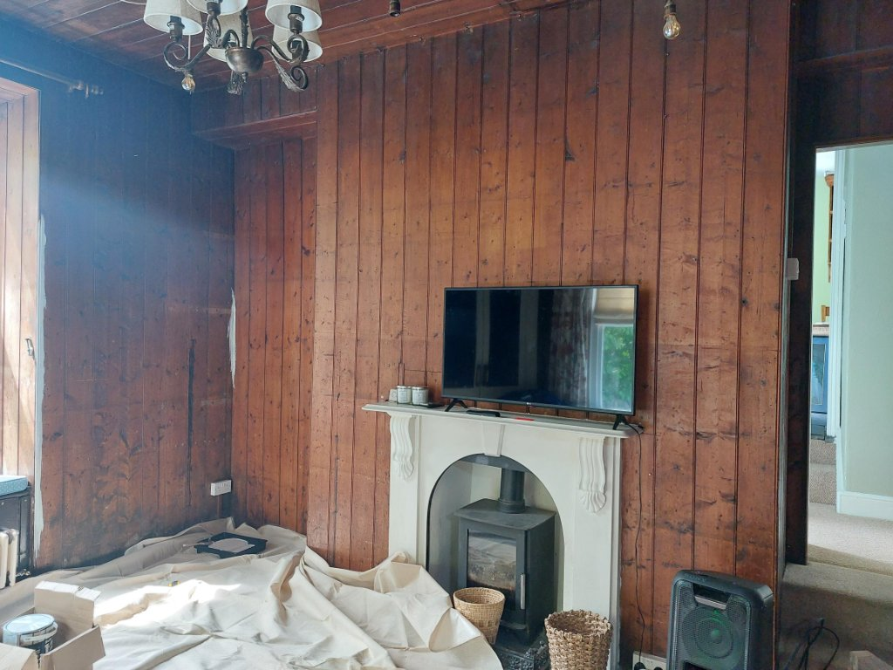
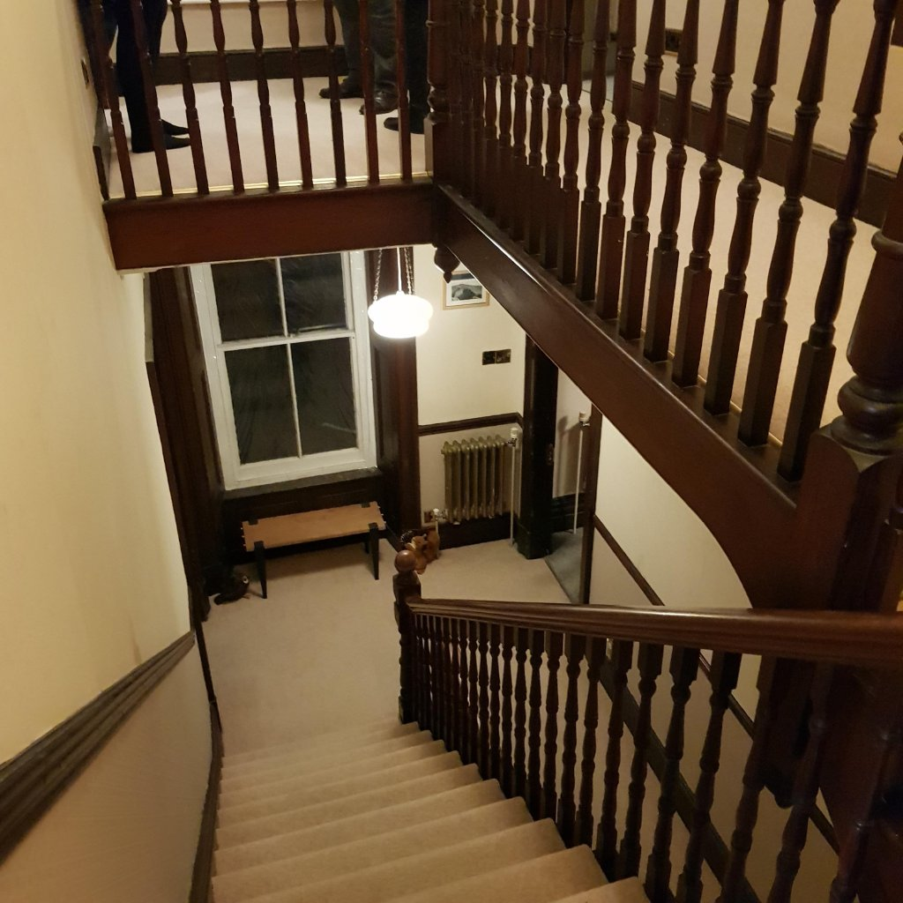
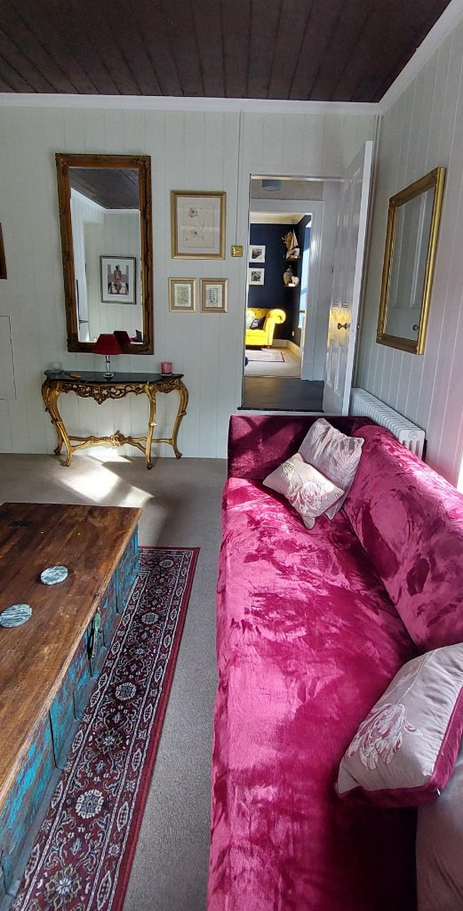
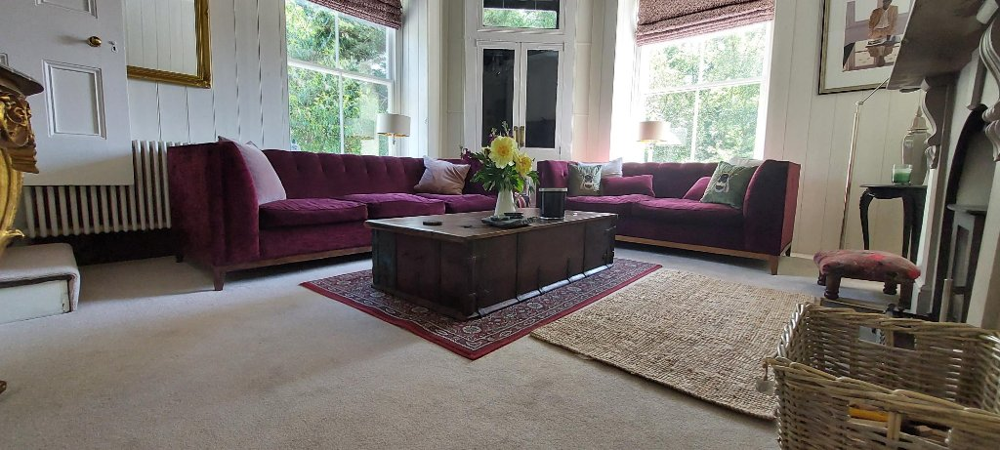
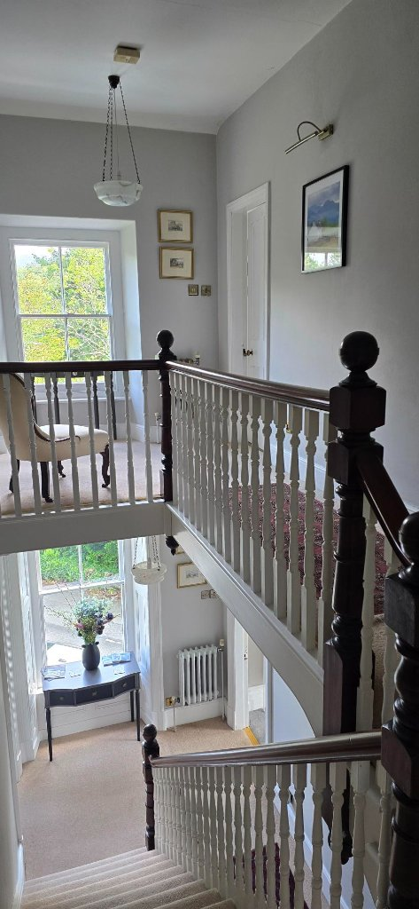
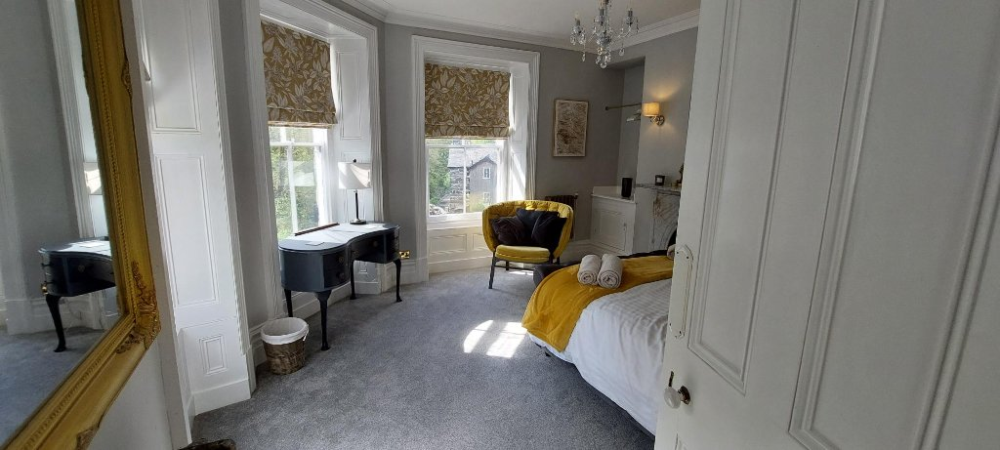
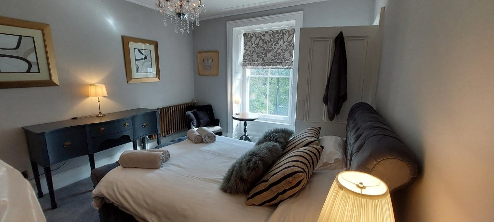

Full renovation
Gwynfryn House
6-bedroom period property, Wales
Before


After





The situation
A grand 6-bedroom period house in Wales in a very poor state throughout. The property needed a complete transformation on a budget of just £40,000 — requiring creative solutions and smart spending.
Our approach
We sourced furniture from second-hand shops and eBay, then upcycled and restored pieces. Every room was meticulously planned to maximise impact while minimising cost. Our team carried out much of the work ourselves.
The result
Completed on a budget of £40,000, the property was transformed from neglected to stunning. Value increase: over £120,000. The house now operates as a thriving holiday let (gwynfryn-house.com), consistently fully booked.
Investment£40,000
Uplift£120,000+
OutcomeHoliday let
StatusFully booked